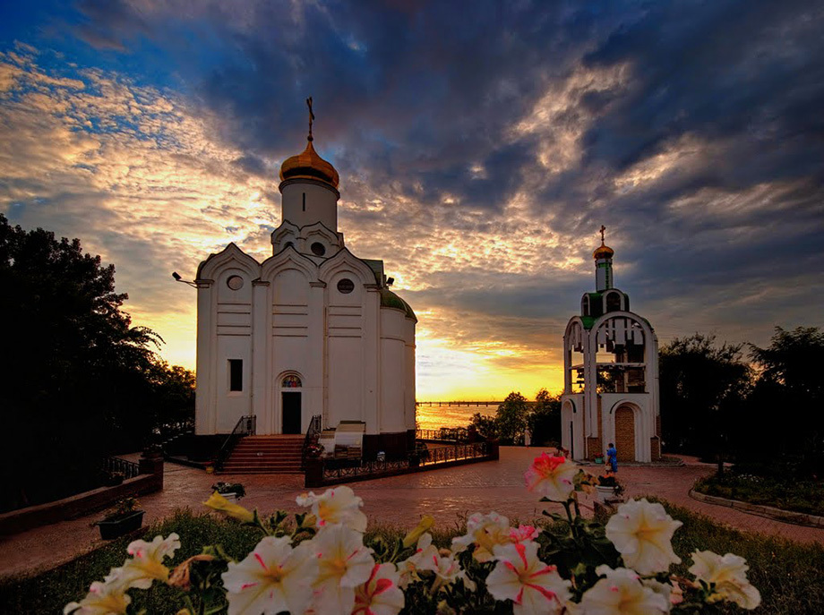
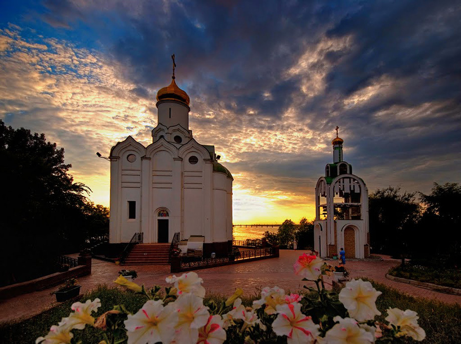
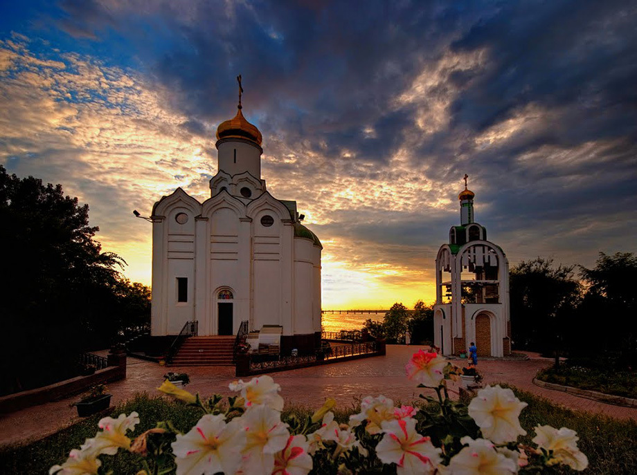
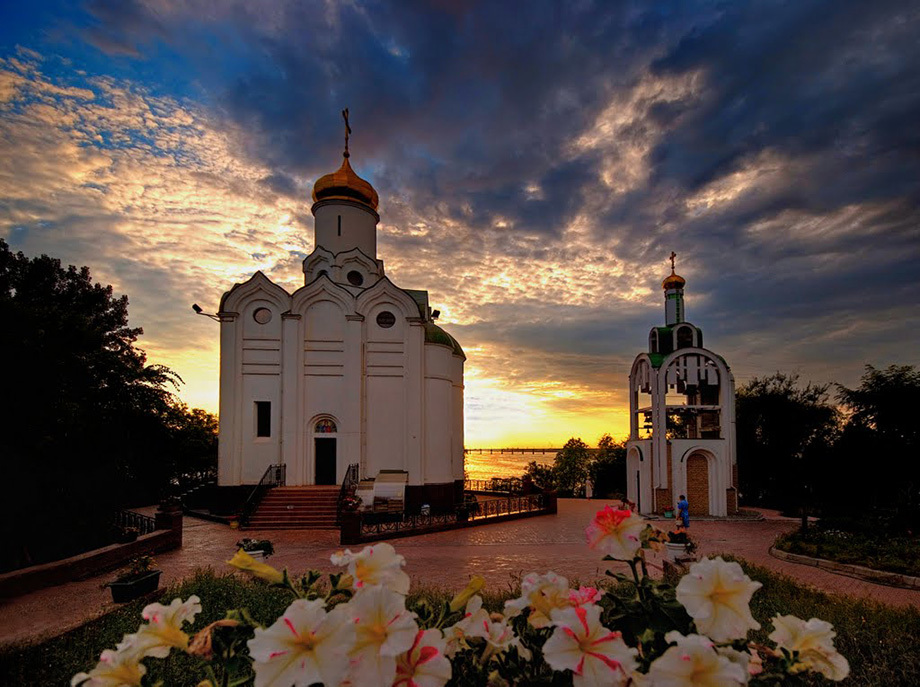

Одне із загадкових місць, овіяне багатьма легендами — Монастирський острів Дніпра є візітівкою міста Дніпро, через який проходить один з найдавніших залізничних мостів України. Назва острову походить від візантійського монастиря, що нібито існував тут до ІХ століття. Проте до нині не знайдено жодних фактів, які б це підтвердили. Лише архітектор Гільом Левансер де Боплан пише у своїх нотатках про подорож Україною у 1635. В записах він згадує, що раніше тут був монастир, а нині його вже не існує.
Сама назва острову змінювалась неодноразово, що пов’язано з тим, як часто змінювались його власники. Кожен з них на честь себе перейменовував острів. Тому він в історії фігурує також під назвою Бураковьский, Богомоловський і навіть Комсомольський.
На початку ХХ ст. Монастирський острів починає зазнавати змін. На його березі побудували гарний яхт-клуб, а у 1956 році установили один з найбільших пам’ятників Т. Г. Шевченку.
Існує легенда, що коли на острові був монастир, то саме він став місцем захисту княгині Ольги від непогоди, що настигла її у 957 р. Саме тоді княгиня поверталась до Царгороду.
Острів вважають дивним та сильним енергетичним місцем. Ніби на ньому є декілька входів у паралельні світи. Тому сюди часто приїжджають екстрасенси.
На острові облаштовано парк розваг з величезним оглядовим колесом.
Острів вважають улюбленим місцем закоханих.
 


